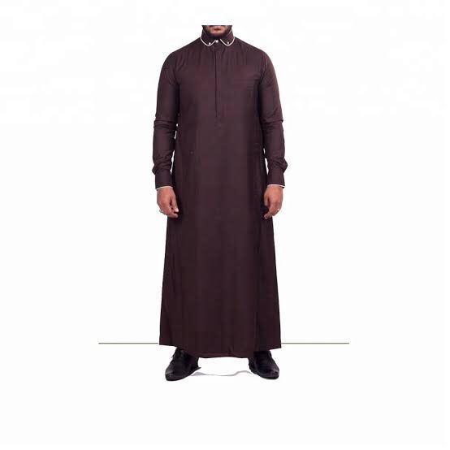
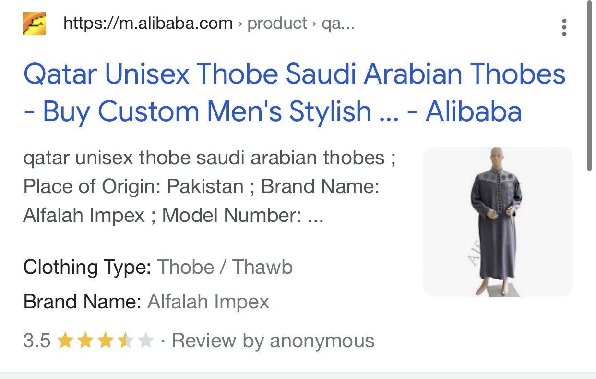
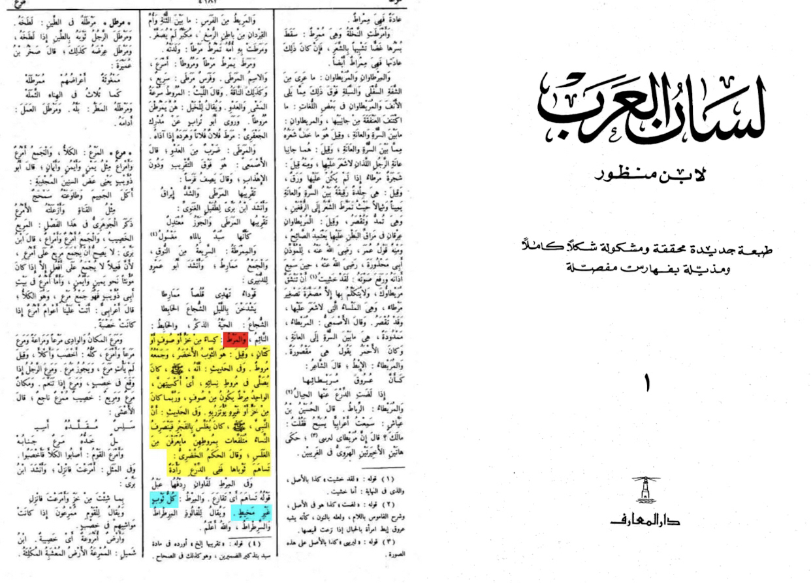

The word in context in the hadith the critics is mirt what does it mean
according to lisan al-arab that is the strongest Arabic dictionary collected by ibn manzoor print of Dar al-Ma’rif page number 4184 word “mirt”
it is a green thobe thobes are unisex so he was wearing a thobe just that I don’t get where the problem is you think 7th century Arabs would follow him if he did this think a little


